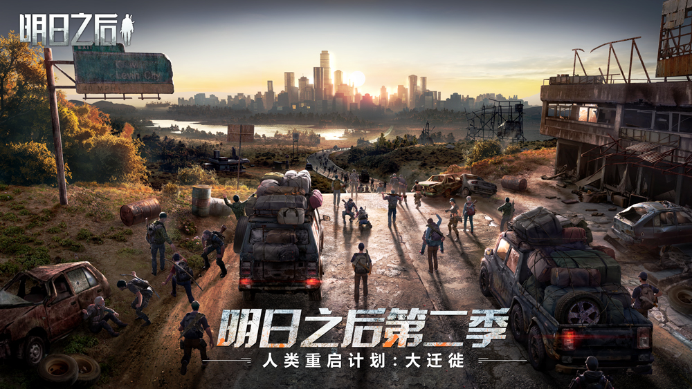
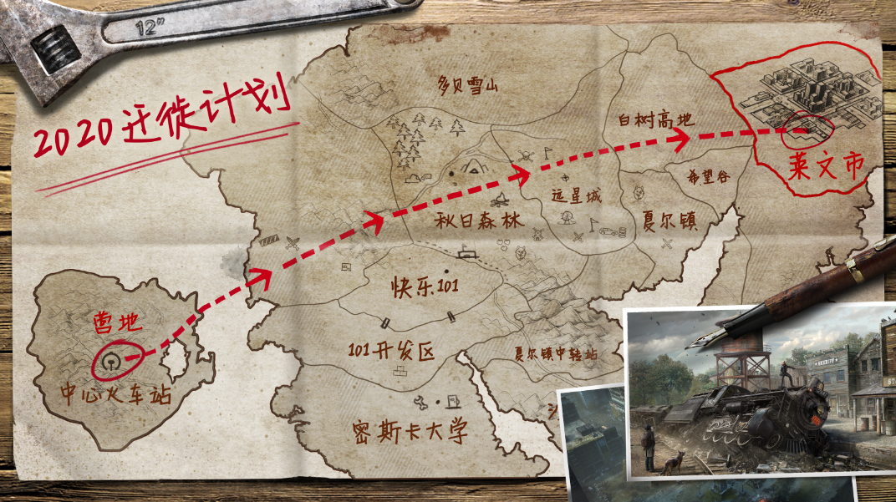

明日之后
病毒末世下的人类生存手游
《明日之后》人类大迁徙计划，1月16日即将启动
2020.01.03莱文市——这座曾经令人恐惧的“灾变之都”，在幸存者们的努力重建下逐渐恢复了电力、医疗、绿意和交通，人类的生活似乎开始“重启”……
为了“重返城市居住”，1月16日，人类大迁徙计划即将正式启动。

离开现居住的这片荒野、回到城市、回归代表人类文明的城市生活，回到……人类真正的“家”？
从野外营地到莱文市郊，从泥泞小路到柏油马路，从茫茫麦田到小区公园……这一次人类营地的重返城市和回家迁徙，被称之为“人类重启计划：大迁徙”。
然而在这个寒冷的冬天，横跨整个西陆平原和北陆高地的遥远距离，注定这场人类的迁徙并不轻松。从零开始建立一条交通线路，清理城郊危险废弃区，将成为迁徙是否能顺利完成的关键因素。
完成迁徙后，人类也将迎来一些新的城市生活——城市合居的双人大地基、营地市民休闲的公园、代表旧日科技的摩托、更坚固的手枪和防爆盾等等。
搬回城市居住、重启城市文明，只是人类重启计划的第一步。2020年，人类对病毒的发源、被掩埋的城市、人体的秘密、以及这个世界还未被知晓的神秘势力也将会有新的认识和发现。
越靠近城市，越靠近病毒母体的遗址，也就越靠近这个世界最深沉黑暗的真相—— 重启城市，也许就像重启了一个充满未知的潘多拉魔盒。没有人知道，放出的是恶魔，还是希望。
但不管如何，春节前2020年1月16日，人类，终于能回家了。真好。

莱文市的开放，末日下人类首次迁徙，这只是第二季中发生的最初的两个小故事。在2020年，还会有更多的故事等待着幸存者们……